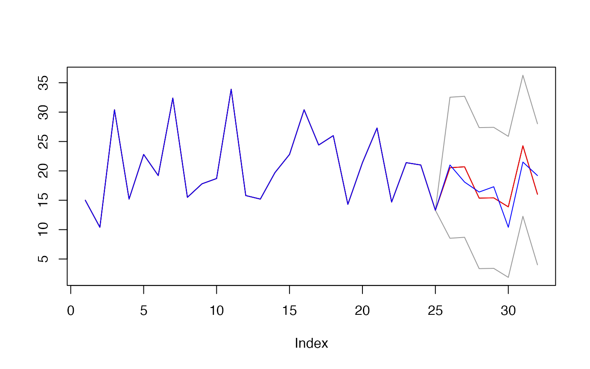
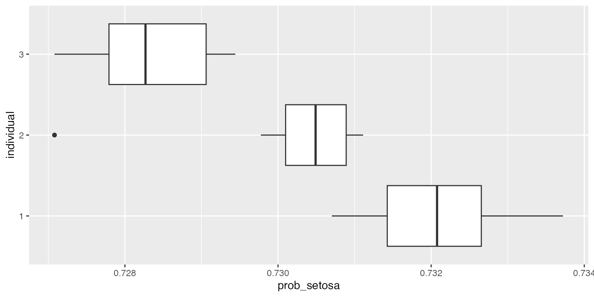
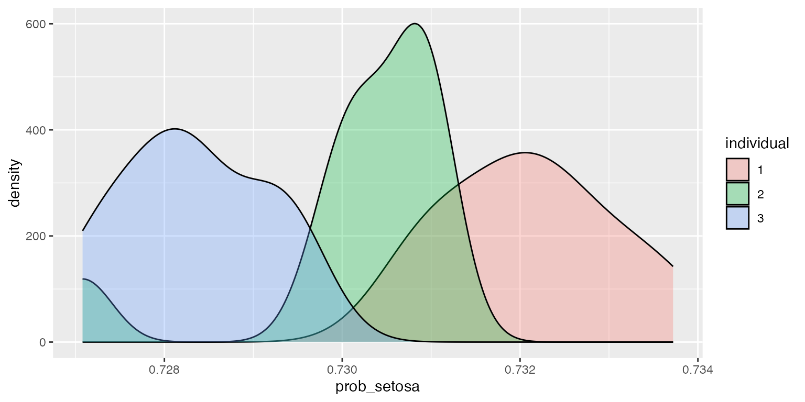

qrnn.Rmd
library(learningmachine)## Loading required package: randtoolbox## Loading required package: rngWELL## This is randtoolbox. For an overview, type 'help("randtoolbox")'.## Loading required package: tseries## Registered S3 method overwritten by 'quantmod':
## method from
## as.zoo.data.frame zoo## Loading required package: memoise## Loading required package: foreach## Loading required package: skimr## Loading required package: snow## Loading required package: doSNOW## Loading required package: iterators## Loading required package: ggplot2## Loading required package: lattice
library(mlbench)
library(palmerpenguins)
X <- as.matrix(mtcars[,-1])
y <- mtcars$mpg
set.seed(123)
(index_train <- base::sample.int(n = nrow(X),
size = floor(0.8*nrow(X)),
replace = FALSE))## [1] 31 15 19 14 3 10 18 22 11 5 20 29 23 30 9 28 8 27 7 32 26 17 4 1 24
X_train <- X[index_train, ]
y_train <- y[index_train]
X_test <- X[-index_train, ]
y_test <- y[-index_train]
dim(X_train)## [1] 25 10
dim(X_test)## [1] 7 10ranger regression
obj <- learningmachine::Regressor$new(method = "ranger", nb_hidden=5L,
pi_method = "splitconformal")
obj$get_type()## [1] "regression"
obj$get_name()## [1] "Regressor"## Elapsed: 1.219 s## [1] 2.435994## Elapsed: 0.092 s
obj$set_level(95)
res <- obj$predict(X = X_test)
plot(c(y_train, res$preds), type='l',
main="",
ylab="",
ylim = c(min(c(res$upper, res$lower, y)),
max(c(res$upper, res$lower, y))))
lines(c(y_train, res$upper), col="gray60")
lines(c(y_train, res$lower), col="gray60")
lines(c(y_train, res$preds), col = "red")
lines(c(y_train, y_test), col = "blue")
mean((y_test >= as.numeric(res$lower)) * (y_test <= as.numeric(res$upper)))## [1] 1Classifier object
set.seed(43)
X <- as.matrix(iris[, 1:4])
# y <- factor(as.numeric(iris$Species))
y <- iris$Species
index_train <- base::sample.int(n = nrow(X),
size = floor(0.8*nrow(X)),
replace = FALSE)
X_train <- X[index_train, ]
y_train <- y[index_train]
X_test <- X[-index_train, ]
y_test <- y[-index_train]
dim(X_train)## [1] 120 4
dim(X_test)## [1] 30 4
obj <- learningmachine::Classifier$new(method = "ranger", nb_hidden=5L, pi_method="kdesplitconformal", type_prediction_set="score")
obj$get_type()## [1] "classification"
obj$get_name()## [1] "Classifier"
obj$set_B(10)
obj$set_level(95)
t0 <- proc.time()[3]
obj$fit(X_train, y_train)
cat("Elapsed: ", proc.time()[3] - t0, "s \n")## Elapsed: 0.103 s
probs <- obj$predict_proba(X_test)
df <- reshape2::melt(probs$sims$setosa[1:3, ])
df$Var2 <- NULL
colnames(df) <- c("individual", "prob_setosa")
df$individual <- as.factor(df$individual)
ggplot2::ggplot(df, aes(x=individual, y=prob_setosa)) + geom_boxplot() + coord_flip()
ggplot2::ggplot(df, aes(x=prob_setosa, fill=individual)) + geom_density(alpha=.3)
obj$summary(X_test, y=y_test,
class_name = "setosa",
show_progress=FALSE)## $Coverage_rate
## [1] 100
##
## $citests
## estimate lower upper p-value signif
## Sepal.Length -0.15814477 -0.2453992 -0.070890371 0.0008811219 ***
## Sepal.Width 0.30575422 0.1285117 0.482996762 0.0014156170 **
## Petal.Length -0.07981755 -0.1546441 -0.004991051 0.0373860120 *
## Petal.Width -0.02359681 -0.1527575 0.105563868 0.7113825029
##
## $effects
## ── Data Summary ────────────────────────
## Values
## Name effects
## Number of rows 30
## Number of columns 4
## _______________________
## Column type frequency:
## numeric 4
## ________________________
## Group variables None
##
## ── Variable type: numeric ──────────────────────────────────────────────────────
## skim_variable mean sd p0 p25 p50 p75 p100 hist
## 1 Sepal.Length -0.158 0.234 -1.09 -0.210 -0.105 -0.0159 0.136 ▁▁▂▃▇
## 2 Sepal.Width 0.306 0.475 -0.0904 0.0613 0.151 0.317 2.01 ▇▂▁▁▁
## 3 Petal.Length -0.0798 0.200 -0.896 -0.0546 -0.0172 0.00710 0.0976 ▁▁▁▁▇
## 4 Petal.Width -0.0236 0.346 -0.739 -0.195 -0.0170 0.00423 1.24 ▁▇▁▁▁